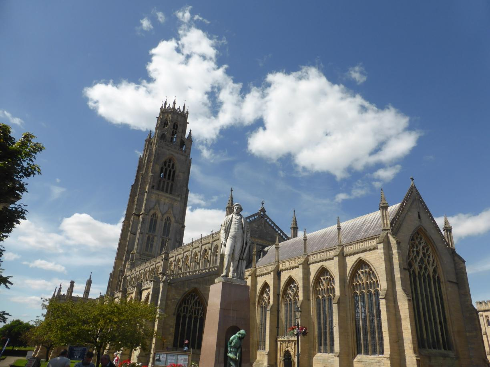
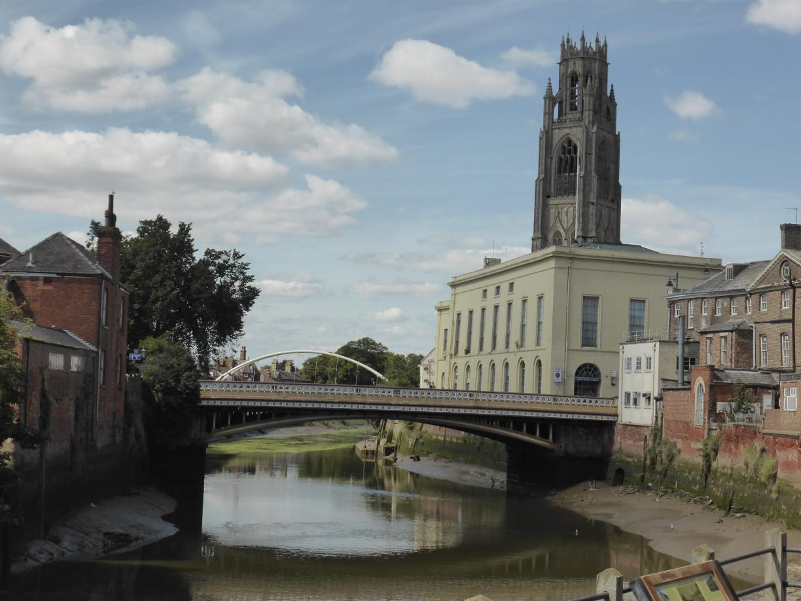
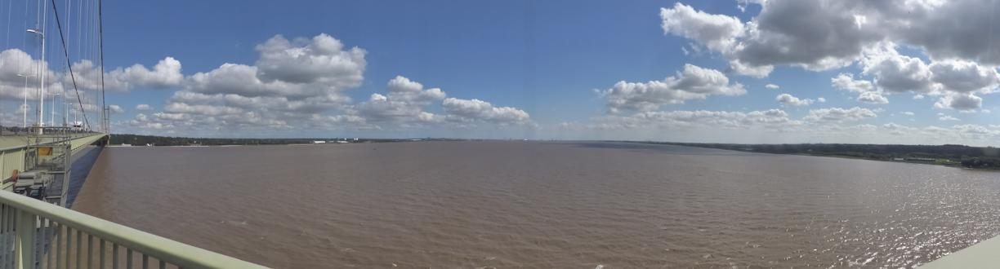
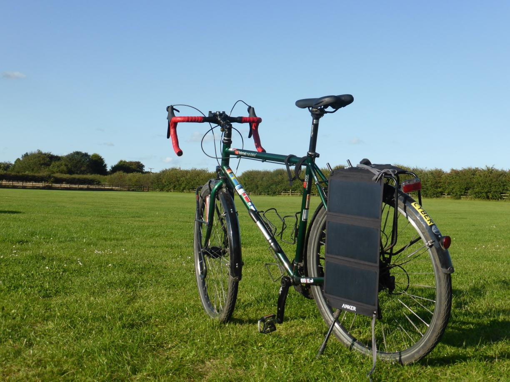
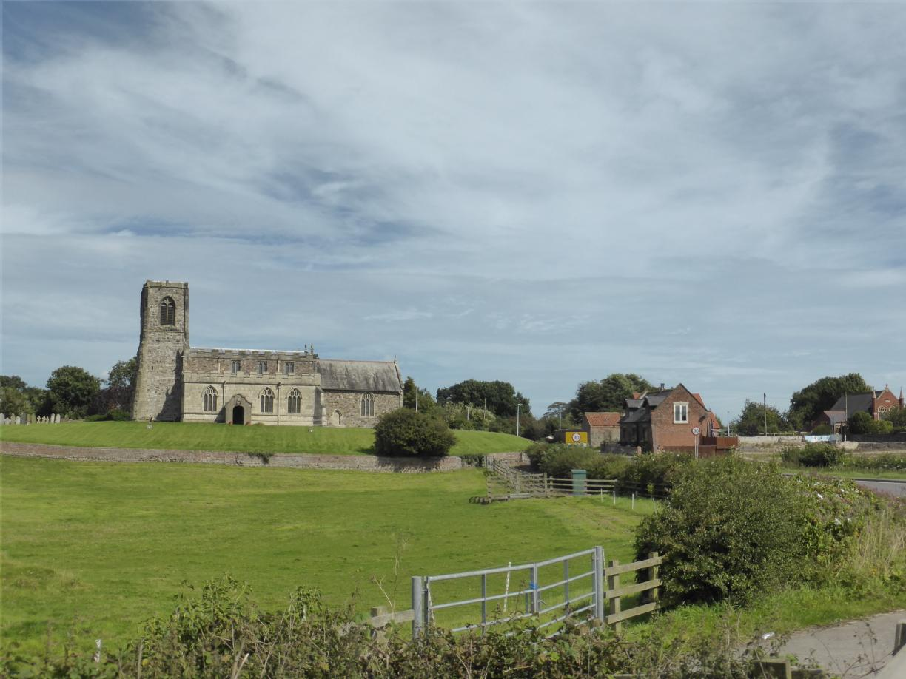
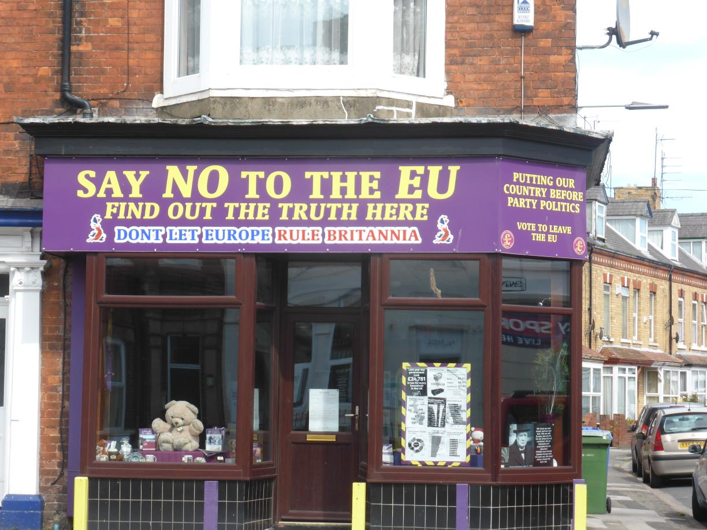
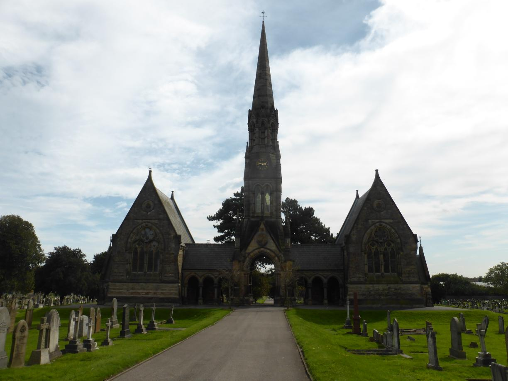
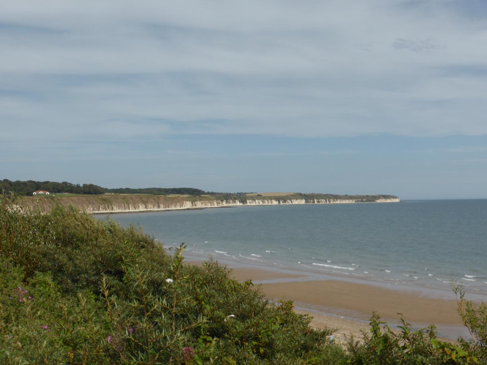

Freude schöner Götterfunken Posted on August 16, 2017
Tag 14
Sutton St. James - Burgh Le Marsh 74 km
Nachdem ich am Abend zuvor erst im Dunkeln meinen Zeltplatz erreichte, hatte ich am Morgen darauf noch mit Wäsche waschen, Reifen flicken und Wartungsarbeiten am Fahrrad zu tun.
Entsprechend spät war es, als ich mich in den Sattel schwang. Gegen Mittag erreichte ich Boston, leider hatte ich weder Tee dabei, noch war ich im richtigen Boston. Trotzdem ein nettes Städtchen.  
Tag 15
Burgh Le Marsh - Great Limber 98 km
Über Grimsby wollte ich eigentlich weiter entlang der Küste bis zur Humber Bridge radeln. Die Straße von Grimsby zur Brücke war allerdings sehr stark befahren, sodass ich einen großen Bogen außenrum fuhr.
Dabei fand ich auf der Straße eines von den Magnetschildern mit rotem ‘L’, wie sie hier die Fahranfänger am Auto haben. Zusammen mit dem “Öveningskör” Schild, das ich letztes Jahr aus Schweden mitbrachte, ergibt das schon fast eine Sammlung.
Später fand ich sogar noch ein kleines Waldstück wo ich ungestört mein Zelt aufbauen konnte.
Tag 16
Great Limber - Hornsea 68km
Nachdem ich nach der Nacht im Wald recht früh auf dem Rad war, musste ich nach ein paar Kilometern bereits eine Pause einlegen, um mich meiner Schaltung zu widmen. Es kam nämlich wiederholt vor, dass die Kette hinten auf das nächst kleinere Ritzel rutschte. Direkt kam mir ein netter Rennradfahrer zur Hilfe und riet mir, ein kleines Schräubchen am Schaltwerk zu verstellen. Auch wenn dies das Problem noch nicht vollständig beseitigt hat, wurde es doch merklich besser.
Gegen Mittag fuhr ich dann endlich über die Humber Bridge.  Am Nachmittag fand ich recht zeitig einen Campingplatz. Das Wetter war gut und ich genoss es auf der Wiese zu liegen und mein Buch zu lesen. 
Tag 17
Hornsea - Cayton 76 km
Mein Weg durch England führte mich bisher schon öfter über die National Cycle Route 1. Leider hatte ich diese auch genau so oft wieder verloren, da an wichtigen Punkten (z.B. Kreuzungen) vereinzelt die Beschilderung fehlte. Heute hatte ich mehr Glück und schaffte es der Route für die meiste Zeit des Tages zu folgen. Am Ende musste ich aber feststellen, dass die Route nicht immer auf dem schnellsten Weg Richtung Norden führt. Dafür war die Strecke aber landschaftlich sehr schön.    